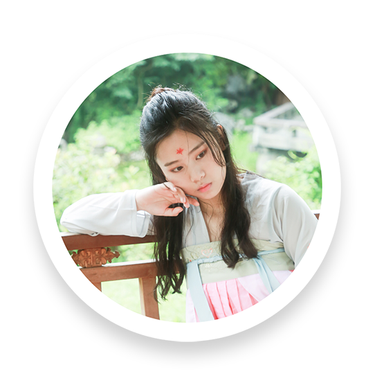
姓名：王玥 Eva
职位: 古筝/President
学院&专业：Revelle College & Major in Math and Econ / Minor in
Accounting
Eva作为FMO新任的团长，也是古筝演奏者中不可或缺的一员。她同时也非常 喜欢瑜伽、诗词和古风的衣服饰品，活得既文艺又健康~
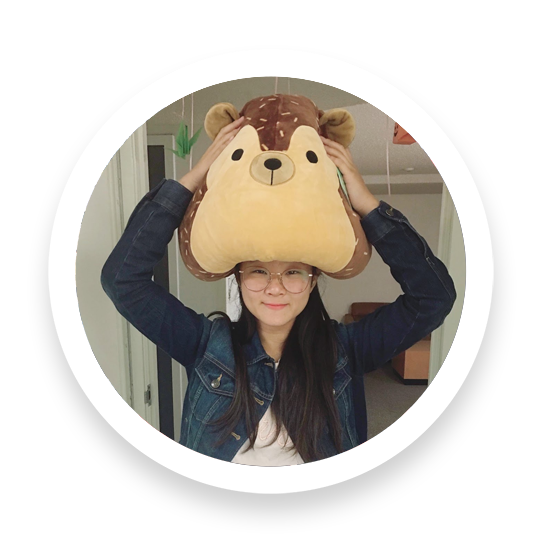
姓名: Athena Liu
职位：古筝/中阮/宣传
学院&专业：Warren College & Major in Data Science / Minor in Math
and Japanese Studies
喜欢古筝，中阮，各种音乐，日漫，睡觉。
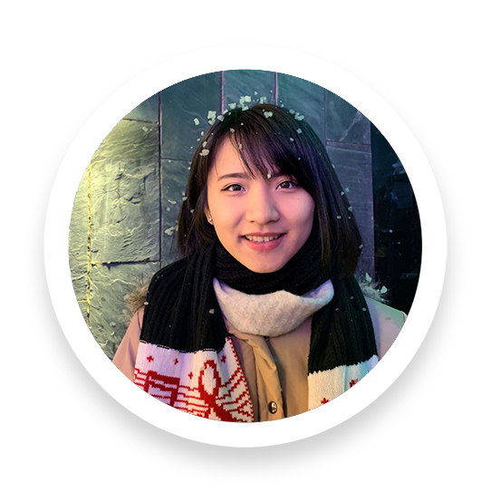
姓名：黄嘉翎 Jolin
职位：内务/古筝/歌手
学院&专业：ERC College & Major in Communication and Human
Developmental Sciences / Minor in Entrepreneurship & Innovations
and Japanese Studies
爱好玩乐器唱歌听音乐摄影。
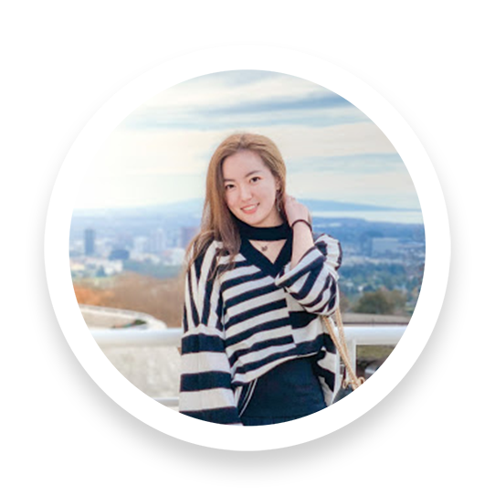
姓名：张禧同 Molly
职位: 古筝/后勤
学院&专业：Sixth College & Major in Visual Arts-Media / Minor in
business
爱好跳舞弹琴。
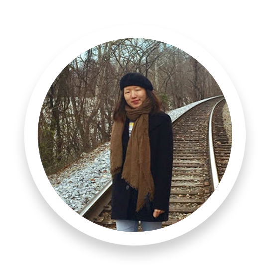
姓名：杨思佳 Skye
职位: 二胡
学院&专业：Revelle College & Major in Structural Engineering
喜欢浪漫喜剧，画画，去看演唱会。

姓名: 张琳涵
职位：秘书/二胡/中阮
学院&专业：Sixth College & Major in Media
喜欢rua猫rua狗rua相机。
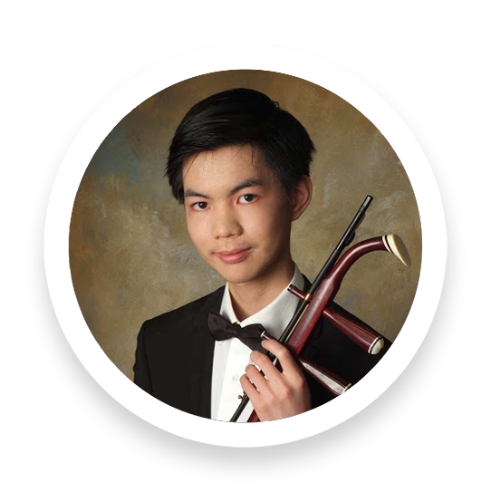
姓名：谢渤瀚 Edward
职位：二胡
学院&专业：Warren College & Major in Computer Science
喜欢电脑游戏和打羽毛球。
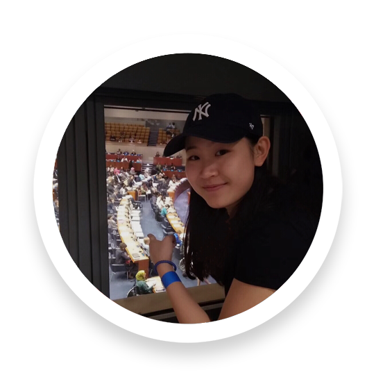
姓名：苏美瑜 Tiffany
职位: 二胡
学院&专业：Marshall College & Major in Political Science:
International Relations and Economics
喜欢音乐，篮球，吃好吃的，各个国家的文化，聊政治哲学宗教，撸猫撸狗 。超想学会冲浪、滑板、各门语言、各种乐器以及音乐制作。
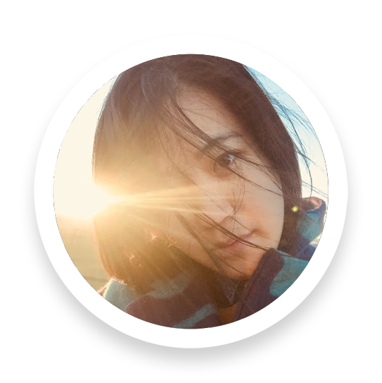
姓名：许之泠 Rose
职位: 笛子
学院&专业：Revelle College & Major in Political Science
喜欢历史, 喜欢戏剧, 尤其喜欢历史剧。
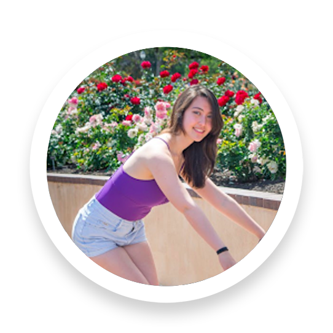
姓名：甜甜 Mira
职位: 笛子
学院&专业：Revelle College & Major in Physiology and
Neuroscience。
我喜欢跳舞、参加军乐队、和做试验。除了笛子之外我也会吹长笛、短笛、 和喇叭。
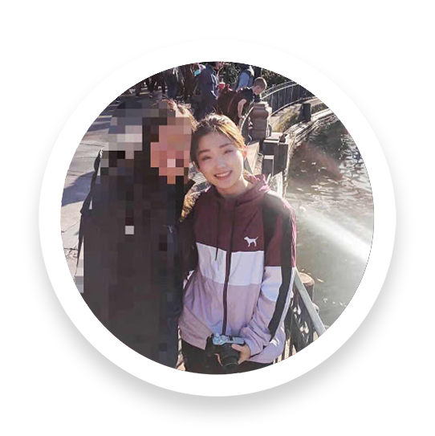
姓名: 范星妤 Cecilia
职位：笛子
学院&专业：ERC College & Major in Economics
梦想是飞出银河系。努力保持一腔热血与热泪盈眶的能力。学过古典舞芭蕾 ，会弹钢琴吉他吹笛子，偶尔唱歌。喜欢滑冰等一切体育运动，下象棋。 喜欢聊学术，聊科学。
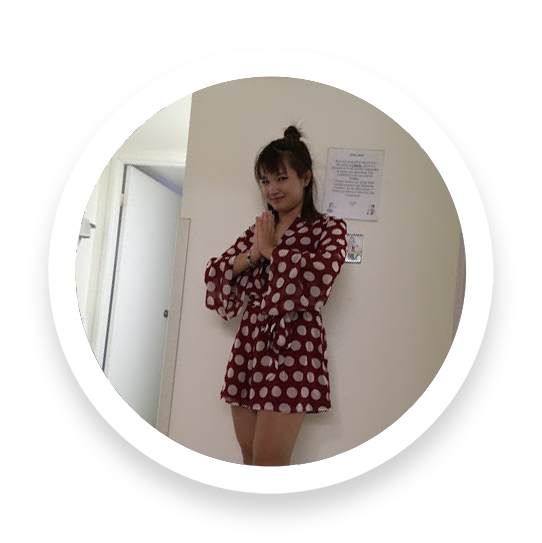
姓名：梁依依
职位：笛子
学院&专业：Warren College & Major in Pharm Chem (Pre Med)
喜欢假装自己是美食博主。
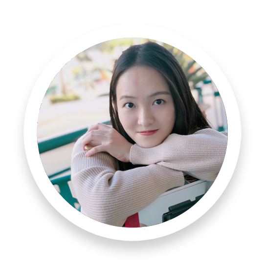
姓名: 雷依琪 Alice
职位: 葫芦丝
学院&专业：Revelle College & Major in Applied Math / Minor in
Business
爱好学习、聊天、听歌看剧、葫芦丝、主持。

姓名：宋雪阳 Jamie
职位: 小提琴/internal affair/tech
学院&专业：Revelle College & Major in Computer Science / Minor
in econ and music
爱好日漫，码农，睡觉。
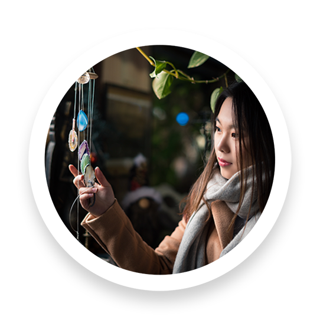
姓名：万雪怡 Sherry
职位: treasurer/钢琴
学院&专业：Warren College & Major in Human Biology / Minor in
Psychology
爱户外，爱road trip，爱发现各种好玩的地方。
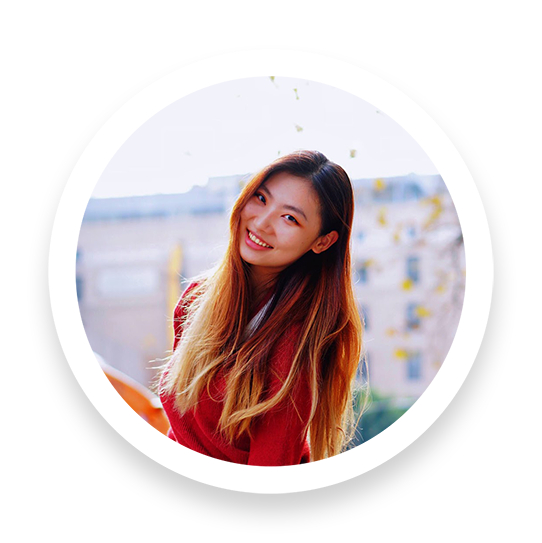
姓名: 刘桐姗 Rae
职位：琵琶
学院&专业：Sixth College & Major in Chemistry / Minor in Math
有一个航海梦的OP死忠粉，重返活力天天穿红色的老年人。
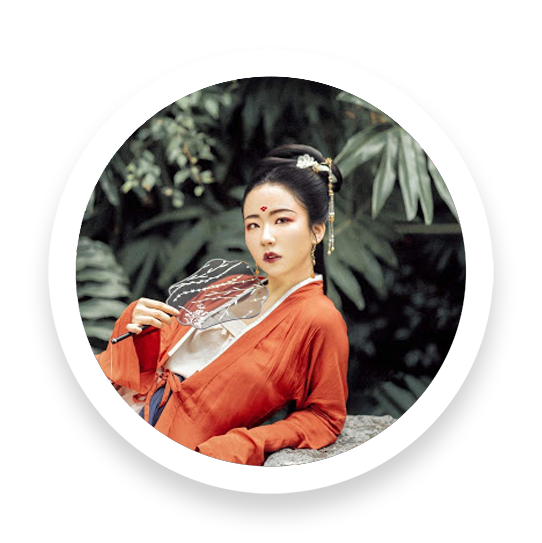
姓名：马雨萱 Mandy
职位：琵琶/内务
学院&专业：Warren College & Major in Data Science
喜欢汉服，做汉服发型，美妆，鬼畜，历史和好看的妹子。摄影还在摸索 中，希望有摄影大神能教教我摄影。有妹子需要汉服造型的可以找我(wink~)
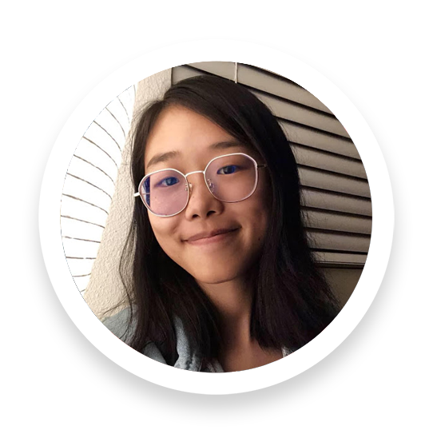
姓名: 黄泽宇 Zoey
职位: 吉他/宣传
学院&专业：Warren College & Major in Math-Computer Science
爱好过于广泛无法详述。最近喜欢料理和古典音乐，在研究冥想，写作， 粤语，日语。
姓名：高文祺
职位: 舞蹈/作编曲外援
学院&专业：Marshall College & Major in Physics
也是二次元原创古风音乐社团作编曲、微博音乐人，跳芭蕾但更喜欢古典舞 ，喜欢摸索各种有趣东西的蛇皮女子一枚，家有拉布拉猪Alpha。